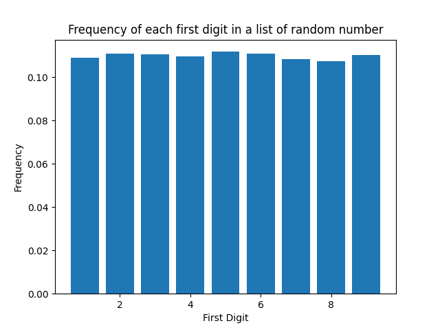
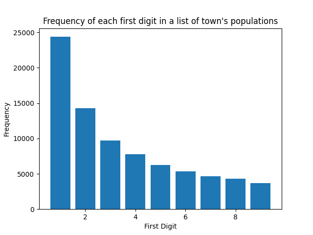
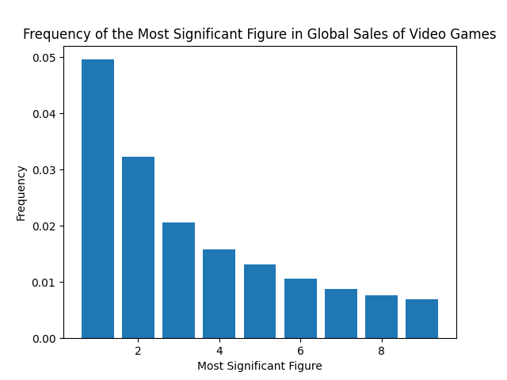

| Task 1 | Task 2 | Task 3 |
|  |
The frequency of each first digit in a list of 100,000 numbers, each of them being a random integer between 1 and 999. |
|  |
The frequency of each first digit in a list of the population of 81,000 US towns. Lower digits have a higher frequency (e.g 1) in a consecutive order, and their frequencies form a curve. |
|  |
The frequency of the most signifcant digit in a list of global sales of vido games. A similar trend is seen in histogram 2. |